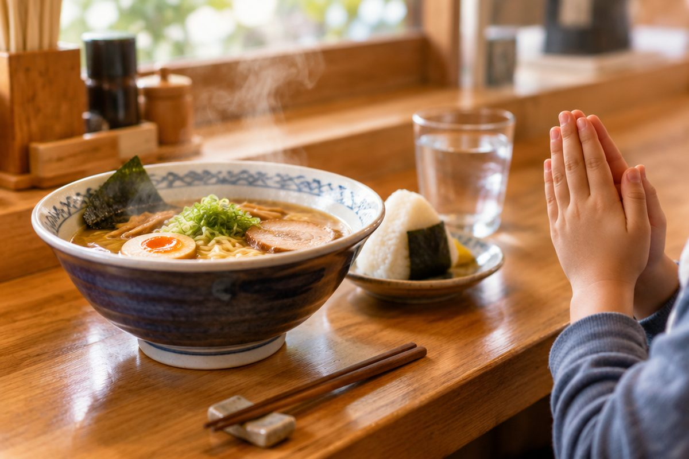

일본 식당에서 음식을 어떻게 주문할까?

일본 여행 중 라멘 가게에 들어갔어요. 맛있는 라멘을 먹으려면 주문을 해야겠죠? 오늘은 "○○ 주세요!"라고 말하는 ~を ください를 배워요.
가게에 들어가면 いらっしゃいませ
일본 가게에 들어가면 직원이 いらっしゃいませ(irasshaimase, 이랏샤이마세)라고 말해요. '어서 오세요'라는 뜻이에요.
직원을 부를 때는 손을 살짝 들고 すみません(sumimasen, 스미마센)이라고 해요. '저기요'라는 뜻으로 쓸 수 있어요.
てんいん(직원): いらっしゃいませ。 / わたし: すみません、メニューを ください。
~を ください ○○ 주세요
'○○ 주세요'는 ○○を ください(o kudasai, 오 쿠다사이)라고 해요. ください는 '주세요'예요.
を는 글자 이름이 '오'이고, 소리도 お와 똑같이 '오(o)'예요. 물건 뒤에 붙여서 '~을/를'이라는 뜻이 돼요.
ラーメンを ください。(raamen o kudasai, 라-멘오 쿠다사이) → 라멘 주세요.
메뉴 이름을 알아봐요
음식: ラーメン(raamen, 라-멘) 라멘, うどん(udon, 우동) 우동, カレー(karee, 카레-) 카레, おにぎり(onigiri, 오니기리) 주먹밥
마실 것: おみず(omizu, 오미즈) 물, おちゃ(ocha, 오차) 차, ジュース(juusu, 주-스) 주스
두 가지를 함께 시킬 때는 と(to, 토) '~와/과'로 이어요. うどんと おちゃを ください는 '우동과 차 주세요'예요.
カレーと ジュースを ください。 (카레와 주스 주세요.)
몇 개인지도 말해요
개수를 말할 때는 ひとつ(hitotsu, 히토츠) 한 개, ふたつ(futatsu, 후타츠) 두 개, みっつ(mittsu, 밋츠) 세 개를 써요.
개수는 ください 바로 앞에 넣어요. 'ラーメンを ふたつ ください'는 '라멘 두 개 주세요'예요.
おにぎりを みっつ ください。(onigiri o mittsu kudasai, 오니기리오 밋츠 쿠다사이) → 주먹밥 세 개 주세요.
먹기 전과 먹은 뒤의 인사
먹기 전에는 두 손을 모으고 いただきます(itadakimasu, 이타다키마스) '잘 먹겠습니다'라고 해요.
다 먹은 뒤에는 ごちそうさまでした(gochisousama deshita, 고치소-사마데시타) '잘 먹었습니다'라고 해요. 맛있으면 おいしい(oishii, 오이시-) '맛있다'라고 말해 봐요!
いただきます。 → (냠냠) おいしい！ → ごちそうさまでした。
핵심 낱말
- ください
- 주세요 (kudasai, 쿠다사이)
- を
- '~을/를'. 소리는 お와 같은 '오(o)'
- と
- '~와/과' (to, 토). 두 가지를 이어요
- ひとつ・ふたつ・みっつ
- 한 개・두 개・세 개
- いただきます
- 잘 먹겠습니다 (먹기 전 인사)
꼭 알아야 할 표현
| いらっしゃいませ。 | 어서 오세요. (가게 직원이 하는 말) | irasshaimase (이랏샤이마세) |
| すみません。 | 저기요. / 죄송합니다. | sumimasen (스미마센) |
| ラーメンを ください。 | 라멘 주세요. | raamen o kudasai (라-멘오 쿠다사이) |
| おみずを ください。 | 물 주세요. | omizu o kudasai (오미즈오 쿠다사이) |
| うどんと おちゃを ください。 | 우동과 차 주세요. | udon to ocha o kudasai (우동토 오차오 쿠다사이) |
| ひとつ | 한 개 | hitotsu (히토츠) |
| ふたつ | 두 개 | futatsu (후타츠) |
| みっつ | 세 개 | mittsu (밋츠) |
| いただきます。 | 잘 먹겠습니다. | itadakimasu (이타다키마스) |
| ごちそうさまでした。 | 잘 먹었습니다. | gochisousama deshita (고치소-사마데시타) |
| おいしい！ | 맛있다! | oishii (오이시-) |
한 줄 정리
- '○○ 주세요'는 ○○を ください(오 쿠다사이)예요. を는 '오'로 읽어요.
- 두 가지는 と로 잇고, 개수 ひとつ・ふたつ・みっつ는 ください 앞에 넣어요.
- 먹기 전 いただきます, 먹은 뒤 ごちそうさまでした라고 인사해요.